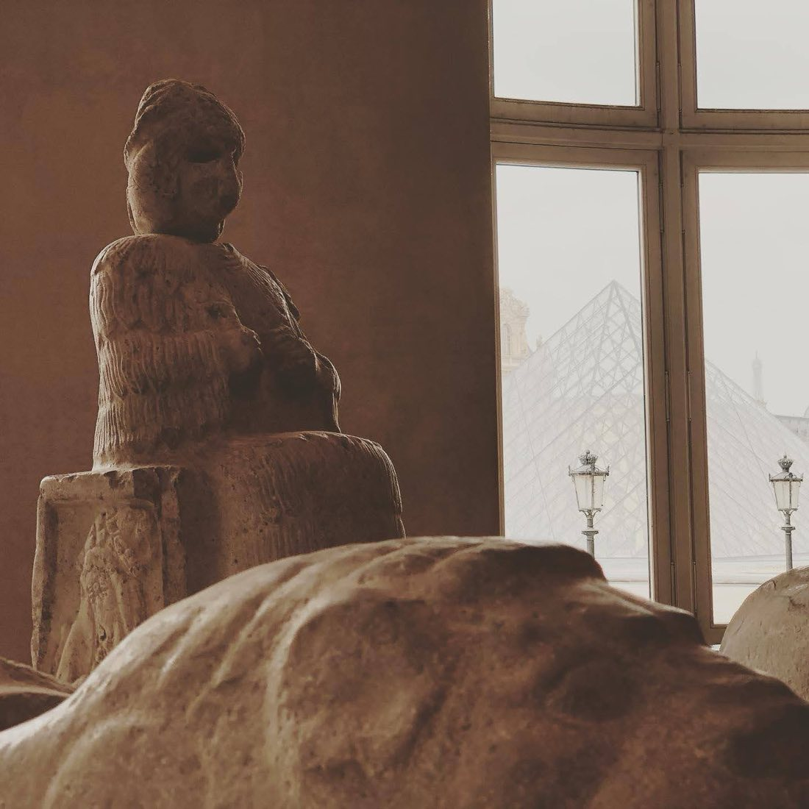

Art & Photography
In the lab I chase single photons; off the clock I chase light of a different kind. Photography is how I slow down, pay attention, and frame the world. Here's a selection of my favorite shots.

More to come — I'm always adding new work. To swap or add photos, drop image files in this folder and add an
<img> tag here.